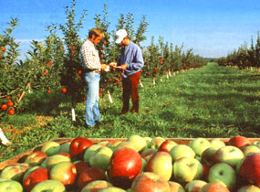
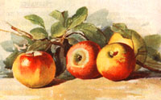
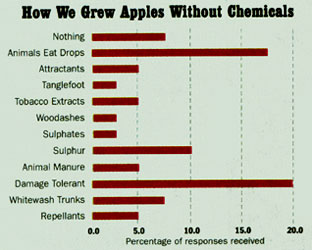

Why are apple orchards, both large and small, so dependent upon chemical insecticides? Is there a way out? Apple expert James Dierberger is on the case.
Statistics show that apples are the most heavily sprayed fruit grown in the country. If this is necessary, what must the apple crop have been like several hundred years ago, before chemicals were in widespread use? The question of growing acceptable apples as well as bypassing the world of chemicals had been germinating in my mind for several years. It had its roots in my own orchard observations regarding apples and pests ...particularly the insect kind. My interest can be traced back to the early 50s when I was growing up in Chicago. We didn't have orchards in the city, but we kids could find green apples to occasionally throw at each other in a spring-training-like exercise that occurred each fall, presumably in anticipation of winter's snowball fights. I knew back then that there were more than just fancy red store-bought apples, since we were not al lowed to take table fruit for ammunition. In the mid-70s, I had graduated from col lege and taken a job in Connecticut, and I was lucky enough to buy my own home with suffi cient land to allow a gar den and a respectably sized orchard. In 1978 I planted four apple trees and taught myself how to graft by practicing with pruning on some wild crabapple trees. To my surprise, about one third of these attempted grafts were successful. I contacted the State Extension Service for additional information. I was amazed to find what I could order through the mail. Over three hundred different varieties in the form of scion wood 1 as well as size-controlling rootstocks were just an envelope and a few dollars away. The rootstock would allow me to create trees that would grow anywhere from four to 24 feet in height. Even more amazing was my discovery of the U. S. Germ Plasm Repository for Apples at Geneva, New York, where more than 3,000 varieties are currently being kept for future plant breeding experiments. I read and reread the available literature and spent many long winter nights deciding which of the many varieties I should order.
After reading about the characteristics of these different varieties, I decided that my orchard should be a "preservation orchard." I would specialize in Old American Apple varieties, most of which have been traced back several hundred years. The apple descriptions I found were all tempting and I managed to select what I thought would be 50 of the best varieties. One wonders what distinguishing characteristics or attributes our ancestors saw in each of these varieties that made them worth preserving through so many generations. My plan called for the use of a strip of land that paralleled my driveway for the orchard. It was 300 feet by 50 feet and would comfortably hold an orchard having 18 rows with four trees in each. I planned on adding 10 different varieties each year, completing the orchard in the fifth year when the trees from the initial planting would be ready to produce their first fruit.
A "PRESERVATION" ORCHARD
I decided that my orchard would specialize in old American apple varieties.
The economy of grafting was soon obvious, for by combining a selected variety with a size-controlling rootstock, I was able to create new trees for as little as $1.50 each. This was less than one-tenth of the asking price at the local nursery, and their selection was limited to only five or six of the commercial varieties. Things didn't go quite as planned and today the collection has more than 50 varieties with a total of 124 trees in two small orchards. Twentytwo of the different varieties are mature enough to produce fruit and it is my observations of these that started me thinking about our past practices of controlling insect pests without chemicals. I consistently observed that with respect to insect damage, not all apples were created equal.
Let me explain. First, I chose not to follow the spray schedule that was recommended by the extension service for home orchards . This appeared to call for too much spraying and I reasoned that I would never know what insect, pest, or damage I was eliminating if I did not first observe it on the fruit. I planned to spray less than half as much as the schedule suggested. My strategy was to see how much damage the crop would suffer with this reduced number of sprays and then decide if more spraying was required. Second, I withstood the temptation to obtain a pesticide license and decided that I would use chemicals that were available to the public and not as toxic to the environment. I assumed that by spraying all of the trees having fruit at the same time with the same spray I would harvest a crop that had about the same amount of blemished fruit from tree to tree and from variety to variety. Was I in for a surprise. Year after year I have observed that there are statistically significant differences among the varieties in terms of the amount of damage. The poorest varieties in the orchard (McIntosh, Red, and Golden Delicious) have as much as 50% of their crop blemished while the best performers (Earliblaze, Westfield SeekNo-Further, Hubbardston, and Wagener) have only 5% blemished. A similar finding holds for these varieties when you consider disease as well. Based on my observations over the past several years, I've ranked the 22 varieties that I have experience with in terms of their overall resistance to insects and disease. This list is shown in the following table, and should be viewed as representing average trends. As more varieties mature and produce fruit, I'll add their observed results to the list. This inherent ability of some of the varieties to resist insect attack is an important finding for apple lovers that could help us reduce our dependence on chemicals by being more selective about the varieties we decide to grow.
Having these observations documented in my notes, I began a systematic search for the reasons there should be such a disparity between the extremes on this list. At first I thought that the location of the varieties within the orchard was the answer. But a review of the orchard's layout showed that the three worst varieties were centrally located. This meant that any insects attacking these three would first have to pass trees of other varieties. Next, I thought that the ripening date of the variety might provide a clue, reasoning that the longer the apples remained on the tree, the more opportunity the insects had to do damage. A comparison of the average ripening dates, however, showed that this was not a significant factor. Finally, I thought that color might be the reason and noticed that two of my poorest varieties were also two of the most beautiful, brightly colored apples. While there might be something here, the correlation breaks down if one compares a Liberty with a McIntosh apple. Liberty is a more handsome apple yet it is much less attractive to insects than McIntosh. Color by itself did not appear to be the reason.
Exhausting what leads I had and still not having an answer, I concluded that the factors that made one variety more or less attractive to insects had to reside within the fruit itself. The subtle qualities that made these apples different probably also accounted for their varying resistance. One of these variables that I noticed was the apparent thickness of the skin. The better performers seemed to have thicker skins, which may be less easily penetrated by insects. This led me to wonder how these varieties might have performed many years ago when fewer chemicals were used. At this point that I decided to write Yankee magazine to request their assistance. I asked their readership in a letter if they remembered how apples were grown prior to the use of chemical pesticides.
I received approximately 60 replies. Several inquired specifically about the old apple varieties that were mentioned in my letter. More than one writer indicated that they recognized the variety by name but had not heard of it since their childhood. Many letters contained references to old gardening books and several quotations were provided. For instance, The Young Gardener's Assistant, a book written by Thomas Bridgeman in 1860, gives this remedy for aphids: "Take 4 gal. water, add 1 lb. soft soap, 2 lbs. sulphur, 2 oz. tobacco, and 1 oz. black pepper. Boil 20 min. and apply to the trees."
For white mealy insects he says: "Combine 1/2 peck quick lime, 1/2 lb flour of sulphur, and 4 oz. lampblack. Mix with boiling water to make a thick paint, and apply to the trees."
Or take William Coxe's advice given in 1817 in his book, A View of the Cultivation of Fruit Trees, on whitewashing tree stems: "Whitewashing the stem not only cleanses the tree of moss but destroys many kinds of lice very injurious to fruit trees; it is followed by a cleanliness in the bark after it has been dissolved by rain and promotes the health and vigor of the tree whenever applied."
Mr. Coxe should know, for his book goes on to describe over one hundred and thirty apple varieties that grew in his orchard in New Jersey in the early 1800's.
Of all the responses, 40 strategies for growing insect-resistant apples were included. I broke down this information down these categories: 1. Did nothing. 2. Let farm animals eat drops. 3. Used attractants. 4. Used tanglefoot on tree stem. 5. Used tobacco extracts. 6. Used woodashes. 7. Used lime & copper sulphate. 8. Used sulphur. 9. Used animal manure. 10. People were more tolerant. 11. Whitewashed trunks. 12. Used repellents. The accompa nying bar graph shows the percentage of responses for each of these categories.
From this we see that there were indeed early attempts at minimizing insect damage using the methods that were at hand. Some of these methods used some potentially potent poisons. Old literature refers to the use of lead, copper sulphate and even arsenic powders as fruit sprays. In 1892, The British Medical Journal warned that apples imported from America might be poisonous because they often arrived covered with arsenic powder. The American apple growers' response was to accuse the journal of attempting to hurt their sales.
TOLERANCE
The willingness of the public to purchase slightly blemished fruit was a significant factor many years ago and helped keep chemical use low.
A governing factor in the amount of spraying the apples received appeared to be the intended use of the fruit. Several responses indicated that apples grown for the commercial market received the most attention, while those destined for home use seldom received any special treatment. From this a picture emerges that explains how acceptable fruit could have been grown without relying on the heavy use of chemicals. This picture has three supporting elements. First, keeping farm animals in the orchard caused a disruption to the insect's life cycle. When a wormy apple fell to the ground, not only was the apple eaten, but the larva inside the fruit were done away with as well. This prevented the insects from gaining a foothold and multiplying. The animals in turn provided fertilizer for the trees. Second, based on my observations, which are in general agreement with several of the responses, I believe that the varieties grown one to two hundred years ago were more resistant to insects than those being grown today. This effectively made insect control easier. Also, the chemicals used then were in general more selective and used to control a single pest. As such, they did not wipe out all insects, friend or foe, like the broad spectrum chemicals in use today. And third, the high number of responses claiming that people were more tolerant of insect damage meant that the orchard owner was able to market his crop successfully even if it contained some blemished fruit. The willingness of the public to tolerate and purchase slightly blemished fruit was a significant factor then, as it is now, in our desire to reduce our use of chemicals.
One may well ask how, if acceptable fruit was once grown with these basic techniques, did we ever develop such a great dependence on chemicals? While there is no simple answer, two of the contributing factors were ignorance and profit. Ignorance because the grower assumed that the increased use of pesticides would only harm the insects, and profit because he found that by using more chemicals in the form of fertilizers and pesticides, he was able to greatly expand his orchard and become much more productive. In this way the same manpower could cultivate two or three times as much acreage and reap higher profits.
WAS ALL THIS WORTH IT? Just walk the orchard in May when the trees are blossoming and smell the delicate fragrance.
So where does that leave us? Well, there are a few possibilities, but don't expect the commercial orchardists to begin planting these older, more resistant varieties. Putting in an orchard takes time and a serious investment before it is likely to show a profit. Furthermore, these older varieties have traits that make them unappealing for the commercial operation. Some of them tend to be shy bearers producing one-half or one-third the amount of fruit that the commercial varieties produce. Others tend to bear every other year. And if that were not enough, some of these old varieties ripen their fruit over a two- to three- week period. Each of these traits would seriously disrupt the economics of today's commercial orchard and make apple growing unprofitable. While these are some of the reasons the old apple varieties are not grown commercially, they present no particular difficulty for the homeowner. Indeed, a most attractive solution is for the homeowner to grow some of these varieties himself.
The plan would be to purchase several "core" trees to begin the orchard. Then, while these trees were still small enough to rework, several of the more resistant varieties could be grafted onto the side branches producing a "mini-orchard" with five or six different varieties on each tree. Grafting is easily learned and there are many books available on the subject. A good resource is your State Extension Service. Using early-, mid-, and late-ripening varieties, this mini-orchard will provide fresh fruit from July to November and, with common cold storage, will give you apples year round. Those who already have apple trees that are still young have a better opportunity because grafting onto an established tree usually accelerates the time to the first fruit production. It is not uncommon for grafts added to mature trees to produce their first fruit in the second or third season. Newly planted apple trees on size-controlling rootstocks can take twice that long and standard-size apple trees can take up to 10 years before bearing their first fruit. Unfortunately, the older and larger the tree, the more branches that must be reworked and older, mature apple trees can grow to such a large size that top working is both impractical and dangerous.
One novel approach of controlling insects is to use a lure to trap them before they can do much damage. One such lure is made by mixing a cup of water, a cup of cider vinegar, two tablespoons of sugar, and a piece of fruit in an open container and hang it from a branch in the tree where control is desired. The mixture will attract and trap many flying insect pests. The containers must be cleaned every three or four days and the mixture should be renewed after long dry spells or heavy rain.
A second lure that can be used is made from a red sphere that is hung from a branch of the tree to trap apple maggot flies before they can lay eggs on the fruit. The balls are covered with a sticky substance such as tanglefoot, which traps any insect landing on it. These catch many flies during the season but are rather difficult and messy to work with. To economize, I make my own from hollow plastic baseballs that are sold in toy stores every spring and summer. The three-inchdiameter baseballs work the best.
As we reach the end of our story, you might well ask why go to all this trouble when apples are so plentiful at the corner grocery? Is it really worth it? The answer is simple. Just walk the orchard in May when the trees are blossoming and smell the delicate fragrance. Or walk the orchard in the fall when there is frost in the air and the trees are burdened with ripening fruit. Or watch your child's face when you tell him the history of the fruit as he takes his first bite. One taste and you'll know for yourself that it's all been worth the effort.
Resources
How to Get Started
1. The Orchard Planner, 15 years of orchard experience, grafting instructions, old apple-variety information. Available for $15.00 postpaid from:
Seek-No-Further Orchard 144 Old Blackman Rd. Hebron, CT 06248.
Antique Apple Trees
1. Seek-No-Further Orchard-144 Blackman Rd., Hebron, CT 06248. 2. Burford Brothers-Monroe, VA 24574. 3. Bear Creek Nursery-Box 411, Northport, WA 99157. 4. Southmeadow Fruit Gardens-Box SM, Lakeside, MI 49116.
Size-Controlling Rootstocks
1. Bear Creek Nursery-Box 411, Northport, WA 99157. 2. Southmeadow Fruit Gardens-Box SM, Lakeside, MI 49116. 3. New York State Fruit Testing Coop-Box 462, Geneva, NY 14456.
Scionwood for Grafting
1. Seek-No-Further Orchard-144 Blackman Rd., Hebron, CT 06248. 2. Bear Creek Nursery-Box 411, Northport, WA 99157. 3. Worcester County Horticultural Society-30 Tower Hill Rd, Boylston, MA 01505. 4. New York State Fruit Testing Coop-Box 462, Geneva, NY 14456.
References
1. The Young Gardener's Assistant, by Thomas Bridgeman, 1860, initial printing 1847. 2. The Living Garden, by George Ordish, history of 400-year-old garden in England. 3. A View of the Cultivation of Fruit Trees, by William Coxe, first published by M. Carey and Son, Philadelphia, 1817, reprinted in 1976 by: POMONA Book Exchange, Rockton, Ontario, Canada LOR IXO. 4. The Apples of New York, Vol 1 & 2 Beach, S. A., 1905, Albany, NY 5. The Apple Book, by Rosanne Sanders Philosophical Library Inc., 1988, 200 W. 57th Street, New York, NY 10019.
|
 Andy Sacks/Tony Stone Images |
|
 |
|
 |
|
|